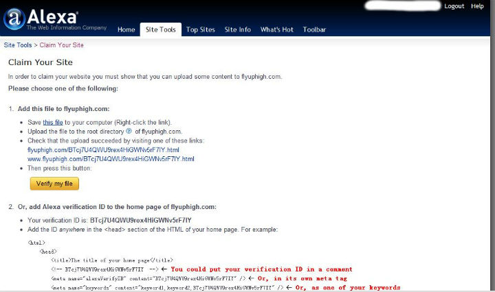
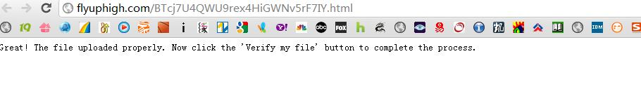
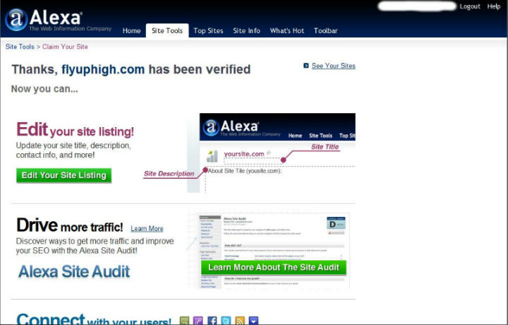
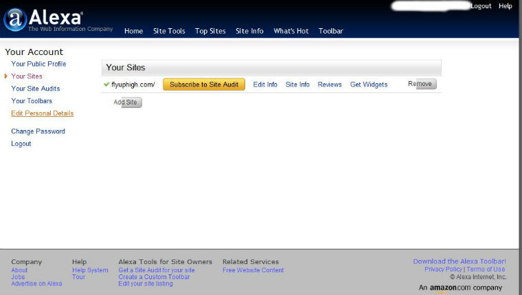
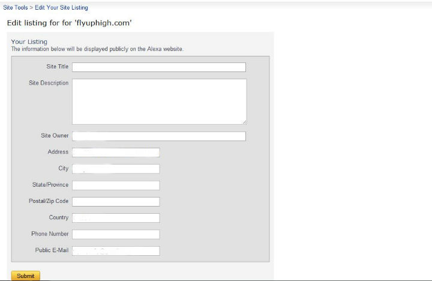
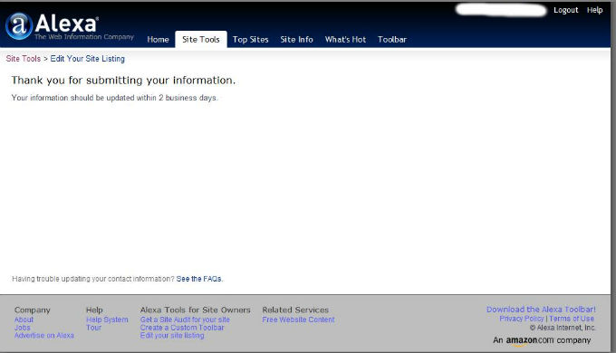

如何提交网站到Alexa
2011-08-03
大家都知道网站的Alexa全球排名是一项权威的数据，那么如何将自己的网站信息提交到Alexa呢？
1、登陆Alexa主页http://www.alexa.com/点击右上角的Register注册一个自己的账号。
2、注册好之后登陆，点击Your Site(你的站点)，提示你没有申明过任何站点。这时点击“Add a site now”来添加你的站点。

3、在输入框中输入你的站点名称，比如我的就输入：http://flyuphigh.com然后点击"Claim your site"来声明你的站点。

4、Alexa需要验证你对输入的站点确实有所有权，不然你随便瞎输网址了都可以了。右击“this file”,把此验证文件下载到本地，然后通过FTP传到你网站的根目录下。比如我的话上传完之后就是flyuphigh.com/BTcj7U4QWU9rex4HiGWNv5rF7IY.htmlS,上传完点击看看有没有，有的话会提示的：

点击“Verify my file”来验证，一般只要你争取将此文件上传到根目录就能验证成功的，没有成功的话请检查是不是传对了。验证完之后出现如下页面：


回到your site,是不是发现你的站点已经被加进去了?

点击“Edit info”来编辑你的站点的信息：对应着把你网站的信息录上去就可以了，提交信息，告诉你你的信息将在2个工作日内更新到Alexa数据库。咋就耐心等吧！可以到站长工具输入你的网站来查询你的网站信息是否被录入Alexa数据库了。

提示提交成功！ 
好了，希望有帮助！